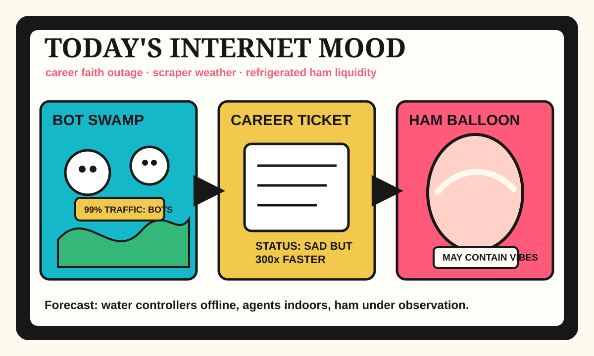

Front Page Oracle
The Mood of the Internet Today
The scraper swamp has refrigerated the career-faith ham inside the agent browser.

2026-08-07
The Oracle Speaks
The internet spent Friday asking what happens when tech workers lose faith in the career arcade, then immediately proposed solving the grief by making Postgres 300x faster, because therapy is expensive and SIMD is right there.
HN also stacked DeepSeek benchmark thunder, critical cyber capability paperwork, internet-connected water-controller dread, 2027 memory sold-out panic, and agent browsers in V8 isolates. The haunted slide deck incident has matured into municipal infrastructure with a login screen.
GitHub declared that every repo is now an autonomous intern: Prime Agent, agent skills, agent computers, authentication glue, swarm coordination, and process-tracing confessionals all entered the same mall and asked for a map of themselves.
Reddit balanced the enterprise dread with inflated refrigerator ham, bear-husky diplomacy, Lake Powell anxiety, Skyrim username prison chaos, and Kawhi salary-cap courtroom weather; Google Trends answered with tennis bracket mist, NWSL searches, Leagues Cup chants, Orioles-Rangers fog, and Mike Trout refresh rituals.
Conclusion: humanity has achieved full-stack uncertainty. The bots are scraping the library, the water pump has opinions, the ham is expanding, and every agent would like to install a skill called Believe In Your Career Again.
Patch Notes for Humanity
Humanity v2026.8.7
Buffs
- Analytical Postgres +300x demo aura.
- Self-improving agents +17% unpaid internship stamina.
- Bear-husky diplomacy +24% woodland coalition legitimacy.
Nerfs
- Tech-career faith -19% after the status meeting developed weather.
- Human web traffic -99% on sites currently being chewed by scraper locusts.
- Internet-connected pumps -12% splash-zone credibility.
Known Bugs
- Memory capacity may display “sold out until 2027” while every app asks for more context.
- App review still occasionally rejects vibes at dusk.
- Sports search weather continues merging tennis, soccer, baseball, and prophecy into one refresh button.
Source Trail
- Hacker News supplied DeepSeek ARC results, assembly shame, ancient-library parsing, tech sadness, cyber capability paperwork, black-hole maps, OpenJDK AI-code bans, water-controller warnings, Postgres acceleration, RAMageddon, Kitesurf, App Store rejection lore, text-only microblogging, and scraper warfare.
- GitHub Trending supplied Prime Agent, agent-skills, Cloudflare Computer, Real Engineer skills, superpowers, authentik, Semantica, MiroFish, grok2api, mise, AutoGPT, Guava, swarm-forge, celld, Legendary OSINT, witr, and Google skills.
- Reddit popular supplied clothing judgment, YYJ deplaning, inflated ham, Toronto expressway urbanism, Starlink escalation discourse, husky-bear search parties, Lake Powell drought dread, Skyrim username justice failure, tariff-booze diplomacy, QVC slip-ups, and poor-man meal nostalgia.